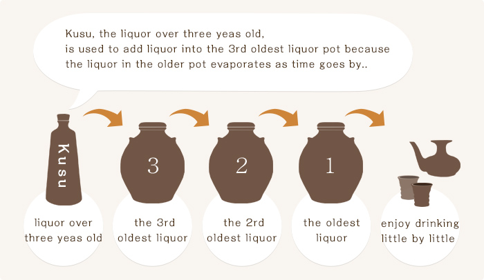

Shitsugi, the tradition of Awamori
Kashu Kahou, Homemade liquor is a family treasure

You cannot mature a good Kusu just by leaving Awamori in a pot.
To be able to enjoy its rich aroma and taste, you have to take a method called Shitsugi.
Shitsugi stimulates and activates the liquor resting in a pot and gives it a steady quality. Why not make your own family liquor and treasure it for 50 or 100 years and pass it down to your descendants?
Shitsugi, the liquor adding method
Shitsugi is a Okinawan traditional and fantasitic method of Kusu production.
First, three clay pots are arranged.The oldest Kusu is considered as a parent Kusu.
Next, the 2nd and 3rd oldest Kusu are arranged. The parent Kusu pot is to be opened at least once a year for some kind of anniversary or celebration, when you can enjoy its aroma and taste.
After that event, the parent Kusu pot is filled again with the 2nd oldest kusu. Then the 2nd oldest is filled with the 3rd one.
Lastly, The liquor in a bottle of Kusu, which is suitable for Shitsugi method, is added to fill the 3rd pot.

Our ancestors of Okinawa invented this method with a feeling of hope to enjoy this taste forever. They are said to have enjoyed this Kusu-adding method year by year.
For those who are not able to arrange several Kusu pots home, we have prepared a convenient bottle substitute (43% alcohol) for your handy Shitsugi practice.